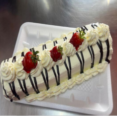

← Volver al módulo 1

Brazo Gitano
Delicado bizcochuelo enrollado con un relleno suave y una decoración cremosa.
Ingredientes
- 8 huevos
- 2 tazas de harina
- 1 taza de azúcar
- 1/3 taza de aceite
- 1 cucharada de esencia de vainilla
Decoración
- 2 tazas de manjar
- 600 ml de crema de leche
- ½ taza de azúcar
- 5 fresas
- Jalea roja
- 300 g de chocolate
Preparación
Preparar el mise en place.
Separar claras y yemas; batir las claras con la mitad del azúcar a punto nieve y las yemas con la otra mitad.
Añadir la esencia de vainilla.
Integrar los ingredientes secos en otro bol y mezclarlos poco a poco con la preparación de claras y yemas.
Hornear por 30 minutos a 180 °C.
Relleno
Mezclar el manjar con un poco de agua para que quede más suave y untarlo sobre la masa horneada.
Enrollar colocando la parte final hacia abajo.
Decoración Final
- Batir la crema de leche con el azúcar hasta que monte.
- Decorar con fresas.
- Añadir chocolate derretido a baño maría.